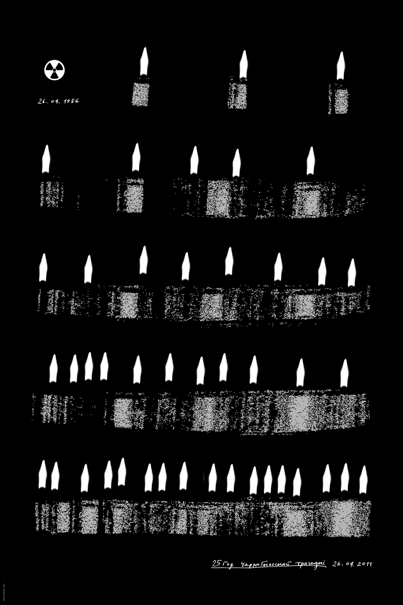

- Рахиль плачет о детях своих…
- (Иер. 31:15)
Художник нашего времени, достойный этого имени, не может обойти своим вниманием проблему жизни и смерти в её многочисленных аспектах. Ведь и в наше время жизнь каждого человека и человечества в целом подвергаетс потенциальной угрозе насилия, уничтожения, террора, деградации. Об этом постоянно твердят СМИ, наука и искусство.
Напоминать людям о трагических эпизодах истории, о массовых убийствах мирных людей и их детей; предостерегать от беспричинной вражды, кровопролития и национальной розни — вот долг истинного художника. И ещё одно благородное дело должен исполнить он — разбудить в людях память о предках — дальних и близких, заботливо хранить их могилы и памятники с надписями (хотя бы в изображениях) — потому что «Уничтожение письмен, начертанных на камне, равносильно концу человеческого мира» (АГАДА XVI, Потоп).
Юрий Тореев создал серию плакатов, в которых все эти проблемы претворены в незабываемые образы. Здесь, в центре Европы, в самом сердце её трижды свершился Апокалипсис в судьбе «богоизбранного народа» — массовое уничтожение евреев. Их было 80 тысяч — стариков, мужчин, женщин, детей… Гитлеровский рейх решал «еврейский вопрос» кардинальным способом: «Вы не имеете права жить» — было объявлено детям Рахили. И они были сметены с лица земли кровавым вихрем холокоста.
Жертвы геноцида — дети. Вместо подписи только одна дата: 1939.
85.
Пройдитесь взглядом по лицам детей, всмотритесь в их глаза. Они ещё не понимают, чтo их ждёт. Одни смотрят спокойно и доверчиво, другие — слегка вопросительно, некоторые насторожённо и чуть-чуть испуганно.
На фотографии мы видим — многие из них уже перешагнули порог смерти, а оставшимся этого не миновать. Для такого плаката не нужно подписи, не нужно призывов. Если Ты человек — поймёшь всё без слов.
Помни холокост! Дети на фотографии ещё живы, но жестокая воля фашистских извергов уже вырвала некоторых из жизни. На фотографии их место заняло зияющее черное пятно. Не такое ли пятно осталось в истории от культуры идиш — жертвы античеловеческих злодеяний фашизма?
86.
Долго ещё будет потрясать сердца людей история фашистских гетто. Можете ли вы спокойно встретить взгляд этой девочки, заточённой в клетке, плачущей кровавыми слезами?
87.
Художник Юрий Тореев справедливо находит общее между холокостом и массовыми акциями геноцида, совершёнными при сталинском режиме. В наше время всем известна трагедия в Куропатах. Юрий Тореев нашел для этого позорного и зверского акта точный эквивалент: Апокалипсис (фрагмент гравюры Дюрера). Над землёй проносится кровавый вихрь, и под копытами бешеных коней гибнут невинные люди — без суда и следствия, единственно по произволу властей, привыкших «решать вопросы» кардинальным способом (рис. 88).
88.
Белорусский народ никогда не оспаривал права евреев на жизнь среди белорусов. Наш народ отличается особой добротой, сердечностью и терпимостью по отношению к другим нациям. Деятели белорусской науки и литературы Р. Бородулин, Янка Купала, В. Тарас, В. Зайка ценили вклад еврейского народа в культуру Белоруссии и не раз выражали горькое сожаление об уничтожении языка идиш и «великом исходе» Израиля из нашей страны. Валерий Тарас пишет: «Якiх яркiх, цiкавых, своеасаблiвых, неардынарных людзей страцiла Беларусь у гады таго «вялiкага зыходу», як нам iх не хапае! Не хапае iхняго энергiчнага, напорыстага жыцьцялюбства, iхняга гумару, iхняй гострай дасьцiпнасцi, без чаго наша беларускае цеста часам бывае прэсным, калi не сквасьнелым…» (А. Астравух. Iдыш — беларускi слоyнiк. Мiнск, Медисонт, 2008). Виталий Зайка сравнивает еврейскую культуру с чудесной многоцветной экзотической птицей, которая залетела когда-то под нашу белорусскую серую крышу: «Мы не понимали её… и только теперь сумели разобрать её слова…» Осталось сожаление и смутная недежда, что прошлое вернётся, но без ужасов геноцида и погромов.
Об этом и говорят плакаты Юрия Тореева — об этом они стонут, звенят колокольным звоном, шепчут скорбным шопотом.
Пройдитесь по Кальварию, взгляните на могилки предков, на их надгробия (рис. 89). Они сплочены тесно, плечо к плечу, как многострадальный еврейский народ, Они бережно хранят память о тех, кто отошёл в мир иной. Они такие же разные, как буквы на плакатах — разные по начертанию, но равные перед лицом истории, равно достойные быть сохраненными в памяти потомков.
89.
Могильные плиты образуют фон плаката — темный, как земля, гостеприимно хранящая останки, черно-серый, как звуки музыки Шнитке, лишённые мелодии, но хватающие за душу своим предсмертным хрипом басов. Это музыка подземелья, его тишина. И только красный колосок растет на этом фоне. Его тонкий стебель связывает живое с загробным, небо с землёй. Своей формой он напоминает крест: знак того, что память о предках священна.
Второй плакат посвящённый Дзядам — (рис. 90).
90.
Фон его — фотография одной из могильных плит. На фото — молодая прекрасная женщина. Её лицо сильно повреждено чьей-то злобной рукой, черты лица неразличимы, но чудом сохранился один глаз. Он смотрит без гнева и обиды, он прощает насилие, совершённое над памятью человека. Он как будто говорит нам: есть высшая Справедливость, верьте в Неё. Колосок прекрасной жизни сломался, но след её остался на небесах и в сердцах людей.
Третий и четвёртый плакаты цикла «Еврейские могилки в Минске» — (рис. 91, 92) Это памятники евреям, расстрелянным в Минске немецкими фашистами. Помни! Их было 200 тысяч. Три сломанных колоска образовали звезду Давида; их красный цвет — это пролитая кровь невинных жертв. Им было отказано в праве на жизнь. Пусть же они живут в памяти потомков.
91.
92.
В июне 1986 года весь мир услышал зловещее слово зона. Это — местность в округе атомного реактора, потерпевшего аварию по преступному недосмотру обслуживающего персонала. Недобрую славу получил г. Чернобыль. Катастрофа унесла массу жизней, и теперь ещё отзвуки её не утихли. Памяти жертв зоны посвящен плакат Юрия Тореева «Чернобыль 25».(рис. 93)

93.
На огромном алтаре горят свечи в память о невинно погибших.
Это не просто свечи — это и души людей, уносящиеся к небу подобно пламени, это и невидимые атомы стронция, поражающие человеческое тело; это также иконостас, уставленный скорбной чередой одинаковых человеческих фигур в белых одеждах — ТАМ все они равны и оправданы.
Тысячи людей были обречены на медленную мучительную смерть от радиоактивного облучения. Взгляните на фотографии (рис. 94, 95). Молодые прекрасные лица медленно покрываются серой мглой, их черты расплываются, теряют чёткость, глаза утрачивают блеск, густые волосы превращаются в черную массу. Не суждено им больше быть молодыми — в один момент окончена молодость, и уж немного осталось дней до ранней смерти. Как будто предвидел это псалмопевец Давид: «Исчезли, как дым, дни мои, и кости мои обожжены, как головня. Сердце моё поражено и иссохло, как трава, так что я забываю есть хлеб мой…» (Пс. 101:4,5)
94.
95.
Не можем мы забыть геноцид сталинских властей по отношению к деятелям культуры. Правду сказал Евгений Евтушенко: «Поэт в России больше, чем поэт». Искреннее, правдивое слово Поэта защищает и провозглашает Правду и Справедливость, без которых жизнь человечества невозможна. Плакат Юрия Тореева «Мандельштам» — это слово позора тем, кто убивает гениального поэта, — ведь он — уста народа, истины, справедливости (рис. 96). Деспотический режим не терпит свободы слова.
96.
Глаза Поэта закрыты колючей проволокой — они не смеют видеть злодеяний властей. Уши его отрезаны — пусть не слышит воплей истязуемого народа. Но напрасны все зверства и репрессии — имя Поэта не умирает, правда его растёт и ширится в веках, подобно имени, многократно повторённому на плакате и образующему ореол над головой Поэта, ореол гения и мученика.
Плакаты Юрия Тореева скорбят обо всех невинно погибших насильственной смертью, смятых колесницами государственных машин, как бы они себя ни называли. Художник осуждает палачей с позиций не только национальных, но и общечеловеческих и вневременных. На плакате (рис. 97) мы видим две противостоящие стихии: прекрасное облачное небо, где блаженствуют души умерших — и ад лагерей смерти, черный застенок, где человеческие души познали безмерные муки и страдания. Надписи на плакате — это перечисление лагерей смерти в Германии, Польше, России… Этот список не поместился на плакате, он незримо продолжается за его пределами.
97.
Remember! Помни! Denke daran!
Л. Миронова,
03.04.2014